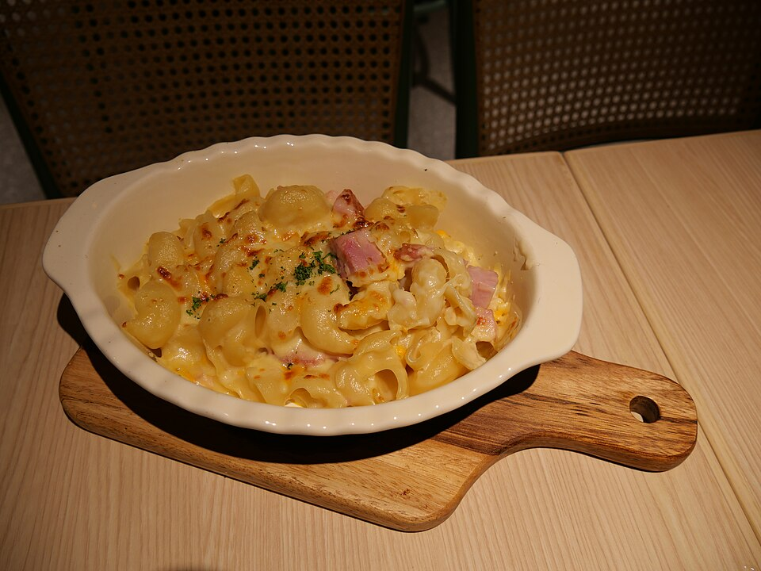

Massas
Macarrão à moda do Sul

Ingredientes
- 250 g de macarrão cozido em água e sal
- 2 cubinhos de caldo de carne dissolvidos em 1 xícara de leite quente
- 3 colheres (sopa) de queijo ralado
- 1 colher (sopa) de margarina
- 150 g de presunto picadinho
- 3 claras em neve
- 3 gemas
Modo de preparo
- Coloque o macarrão em forma refratária untada e polvilhada com farinha de rosca. Espalhe queijo e presunto.
- Misture a margarina com o caldo e despeje sobre o macarrão.
- Bata ligeiramente as gemas com as claras; espalhe por cima. Leve ao forno quente por 15 minutos.